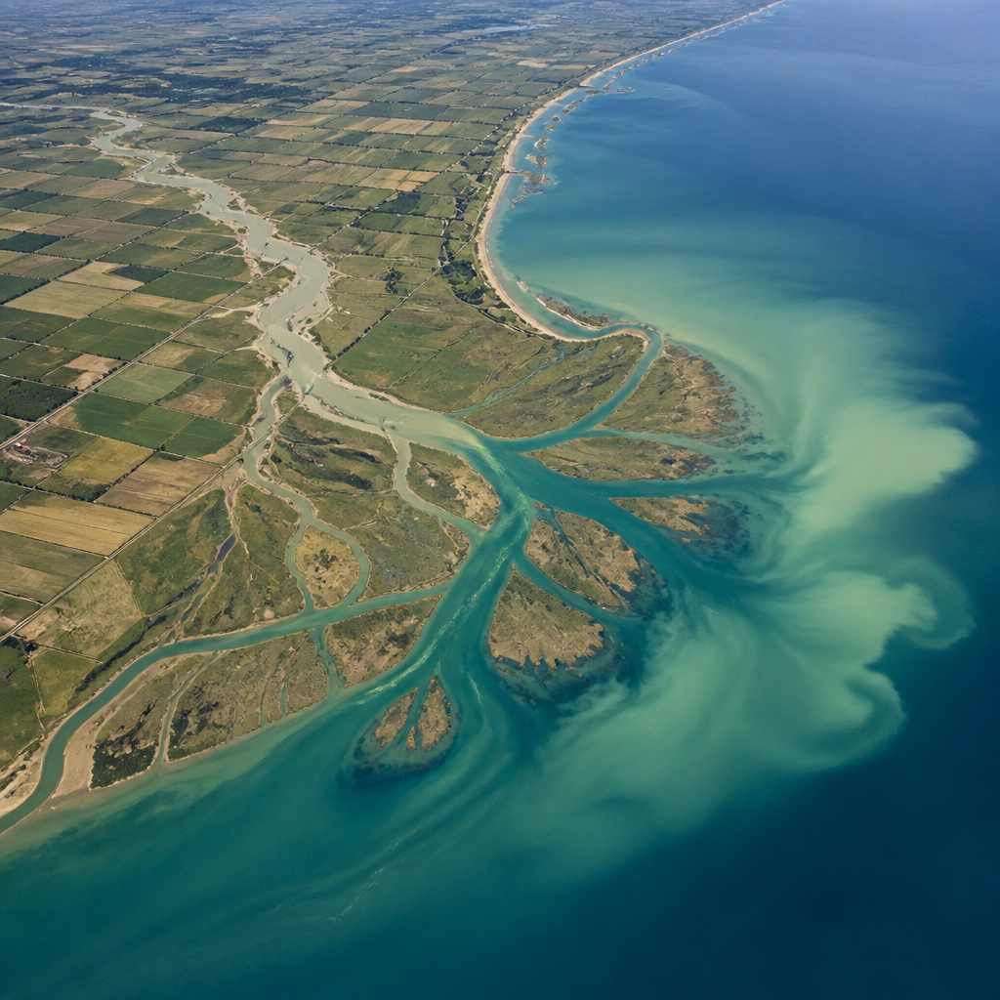
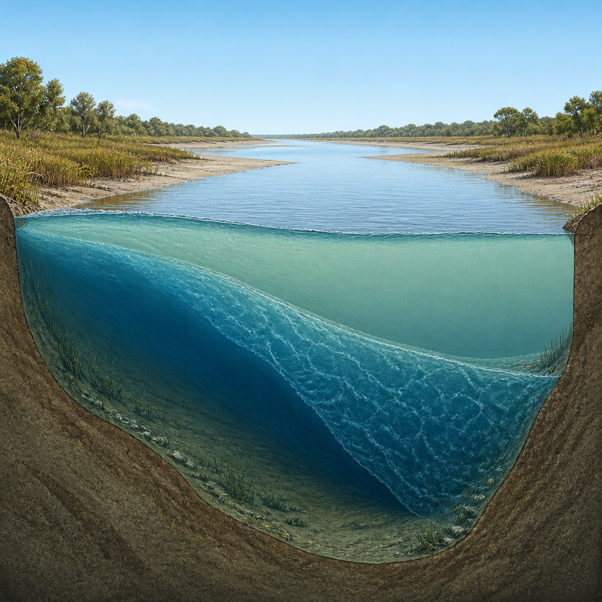
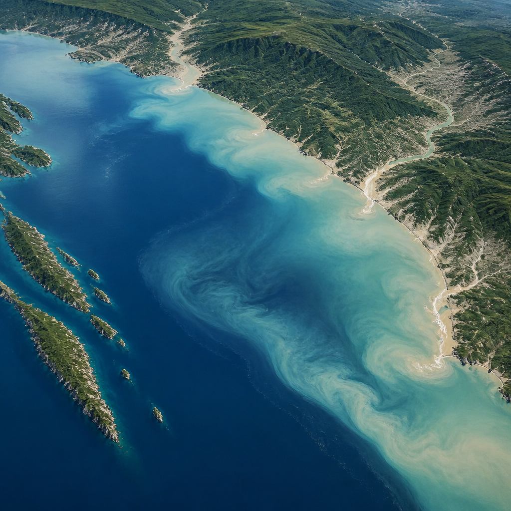

Un modello tridimensionale ricostruisce l’intrusione salina del 2022 e i pennacchi di acqua dolce delle alluvioni del 2023.
In meno di un anno, il sistema costiero del delta del Po e della costa adriatica dell’Emilia-Romagna ha attraversato due condizioni opposte. Prima la siccità record del 2022, poi le alluvioni del maggio 2023. Uno studio condotto da Cnr Ismar e dalla Struttura IdroMeteoClima di Arpae mostra come lo stesso tratto fra fiume e mare abbia reagito in modo speculare: durante la siccità il mare è risalito nel fiume; durante le piene il fiume si è esteso sul mare.
La ricerca, pubblicata su Continental Shelf Research, ha usato un unico modello tridimensionale per ricostruire entrambi gli estremi. Un modello tridimensionale è uno strumento di calcolo che simula ciò che avviene nello spazio, considerando anche la profondità dell’acqua. Questo approccio permette di osservare non soltanto quanto si spostano le masse d’acqua, ma anche se restano in superficie o sul fondo.
Nell’estate 2022 la portata del Po a Pontelagoscuro è scesa a circa 100 metri cubi al secondo in luglio, il valore più basso mai registrato. Con una portata così ridotta, il fiume ha avuto meno forza nel contrastare l’ingresso dell’acqua marina lungo i rami del delta.
Si è così formato un cuneo salino, cioè una massa di acqua marina che avanza sotto l’acqua dolce del fiume. L’acqua salata, più densa, tende infatti a occupare gli strati vicini al fondo, mentre quella dolce rimane in superficie. Secondo le simulazioni, acqua con salinità superiore a 2 grammi per chilogrammo, soglia critica per l’uso irriguo, è risalita per oltre 30 chilometri lungo il Po di Pila e il Po di Goro.

Meno di un anno dopo, fra il 2 e il 5 maggio e poi fra il 17 e il 20 maggio 2023, forti piogge in diversi bacini hanno provocato alluvioni e frane in tutta l’Emilia-Romagna. I fiumi appenninici hanno risposto con piene brevi ma molto intense. Reno e Fiumi Uniti hanno superato portate di 1.000 metri cubi al secondo, il Savio ha superato 600 metri cubi al secondo e il Lamone ha raggiunto circa 400 metri cubi al secondo.
In questo caso il movimento si è invertito. Le piene hanno prodotto pennacchi di acqua dolce: masse d’acqua fluviale più leggere di quella marina, che si sono propagate in mare. Il pennacchio del Reno è arrivato fino a 8,5 chilometri al largo e fino a 13 metri di profondità. Quello dei Fiumi Uniti ha raggiunto 7 chilometri, mentre quello del Savio circa 6,6 chilometri.
I pennacchi provenienti dai diversi fiumi si sono poi uniti in una fascia quasi continua di acqua meno salata, larga circa 8 chilometri e estesa dal delta del Po fino al Marecchia vicino a Rimini. Lo studio evidenzia quindi un effetto cumulato: insieme, fiumi piccoli possono produrre un impatto paragonabile a quello di un grande fiume.

Per analizzare questi fenomeni è stato utilizzato Shyfem, un modello idrodinamico tridimensionale open source sviluppato dal Cnr, da Arpae e da altre istituzioni nazionali e internazionali. Un modello idrodinamico descrive il movimento dell’acqua e le sue caratteristiche, come temperatura e salinità. La griglia di calcolo comprende oltre 83.000 elementi triangolari e copre il Po da Pontelagoscuro, a circa 80 chilometri dalla costa, tutti i rami e le lagune del delta e la costa dall’Adige fino al Metauro.
Il dettaglio della simulazione cambia a seconda delle aree: passa da 2 chilometri in mare aperto a 10-100 metri nei canali. In verticale, il modello è suddiviso in 41 strati, con spessori di 25 centimetri nei primi 2 metri. È stato calibrato sull’anno 2017 e verificato usando le campagne di misura Arpae lungo il Po di Pila nel 2022 e le stazioni costiere del 2023.
Il modello riproduce bene temperatura e salinità, pur sottostimando localmente di qualche chilometro l’intrusione massima del cuneo salino nel 2022. La lettura con lo stesso strumento di siccità e alluvioni mette in evidenza due modi opposti di funzionare dello stesso sistema costiero: il mare che risale il fiume, sul fondo e per periodi prolungati durante la siccità; il fiume che si apre sul mare, in superficie e per pochi giorni durante le piene.
Gli eventi del 2022 e del 2023 rappresentano situazioni eccezionali che definiscono nuovi limiti della variabilità del sistema fra terra e mare. I risultati possono essere utili per una gestione sostenibile della risorsa idrica, considerando gli impatti del cambiamento climatico e degli interventi antropici. Tra i prossimi passi indicati dagli autori ci sono l’inclusione dei prelievi idrici, delle barriere antisale presenti o progettate e lo sviluppo di un sistema di previsioni dell’intrusione salina.
Questo articolo l'hai letto sul blog di Meteo News Radar: un'app che ti mostra da dove vengono i numeri, invece di limitarsi a dartelo. E ogni mattina ne trovi uno nuovo come questo.